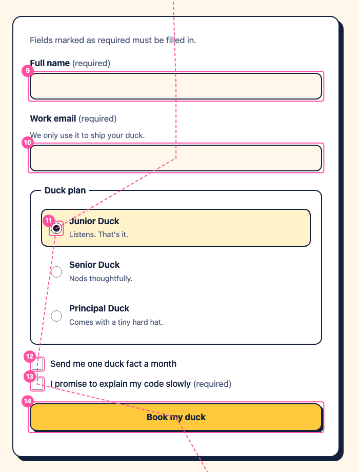
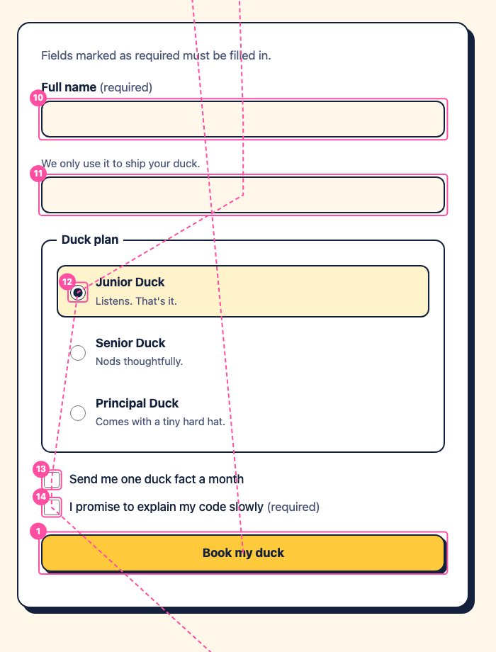

Equinox hackathon
Stop tabbing
by hand
Automated accessibility testing for the web, ported from our Android DSL.
November 2026
The problem
Accessibility testing is still manual
- ⌨️Every release, someone presses Tab and writes down where focus goes
- 👀They check outlines, labels, headings, dialogs and contrast by eye
- 🔁It's slow, easy to skip a step, and the same bugs come back
On Android we already solved this: the a11ytesting library turned that checklist into instrumented tests.
The idea
Same DSL, new platform
composeTestRule.accessibility { keyboardFocus { next() shouldFocus "skip-link" next() shouldFocus "nav-features" } }
await a11y(page).keyboardFocus((k) => k.next().shouldFocus('skip-link') .next().shouldFocus('nav-features'));
A publishable library plus a sample app, just like the Android project. Runs in Chrome, Firefox and Safari's engine.
What it checks
One line per manual check
| Area | Checks |
|---|---|
| Keyboard | Tab order forwards and backwards, visible focus, keyboard traps, dialog focus traps |
| Elements | What screen readers announce: names, descriptions, roles, headings, states |
| Page | Language, title, landmarks, heading outline, positive tabindex |
| WCAG scan | axe-core with WCAG 2.2 AA rules, in every page state |
| Web only ✨ | 400% zoom, text spacing, focus hidden by sticky headers, reduced motion, pausing animations |
Live demo
DuckOps: rubber duck debugging, as a service.
- Tab through the page and the dialog
npm run test:chromium: all green- Break it with
?broken=1and runnpm run test:broken
Focus order map
The tab order, drawn


tabindex="1" makes the submit button stop 1.It already paid off
Our own showcase page failed it
- 🦆Animations with no pause button WCAG 2.2.2 · fixed with a remembered "Pause animations" toggle
- 🔍Sticky header hid focused fields at 400% zoom WCAG 2.4.11 · header no longer sticky on narrow screens
- 🧭Safari ignores scroll padding for keyboard focus WCAG 2.4.11 · only caught because the tests run in WebKit too
Broken mode: seven classic bugs on demand. About 20 of 39 tests fail, each for the right reason.
Next steps
Where it can go
Publish to npm
Any web team adds it with one install command. The package is already set up.
Audit any URL
Focus map, axe and zoom checks for any page, with zero test code. Something you can't do with someone else's Android app.
Also possible: a screen reader transcript test, and focus maps posted on every pull request.
Thank you
github.com/jeprubio/web-a11y-testing